Unit 12 · Study guide · China
Remaking China 辛亥 · 五四
From the last dynasty to the Northern Expedition, 1900–1927
ContentsOverview
The unit in one paragraph
pp. 415, 428–429
In the first decade of the twentieth century China changed fast, above all in the cities and among the educated. Cities were paved, lit, and policed; the Qing court promised a gradual move to a constitutional monarchy; voluntary societies fought foot binding and opium. In 1911 the dynasty fell. It handed its armies to a republic under Yuan Shikai, but military unity soon broke down and warlords fought for bases. Meanwhile nationalism drove cultural life: a new kind of intellectual, trained at modern universities or abroad, attacked filial piety and arranged marriage, wrote in the vernacular, and took up Western ideas from science and democracy to anarchism and communism. In the 1920s Sun Yatsen's Nationalist Party built a base in Guangdong with Soviet help, and in 1926 it launched the Northern Expedition to reunify the country.
- Who led the changes in China's economy, education, and political organization?
- How was resistance to change overcome?
- What role did foreign countries play?
- Did the militarization of society slow other changes down or speed them up?
- Which changes reached farmers in the countryside?
Timeline at a glance
A weak dynasty, active elites
pp. 416–417
After backing the Boxers and suffering foreign intervention, the Qing needed to win back the people's confidence, and it was broke. p. 416
With old foreign loans added, the debts took all the customs revenue, leaving little to run the government and nothing for modernization. p. 416
Local activism pp. 416–417
Forced to look after themselves, local elites took on modernization projects: new schools and new periodicals. People asked how Europe and Japan had become rich and strong.
Yan Fu: the Western package
One of the first Chinese to study in England, Yan Fu translated Mill's On Liberty (1903) and Montesquieu's The Spirit of Laws (1909). The West's form of government freed individual energy, which could be channeled to national goals. Only 30 percent of China's troubles came from foreigners; China could fix the rest itself.
Anger at the powers
- Funds raised to buy back railroads built by foreign firms.
- Boycotts of the United States (1905–1907) over its immigration law and treatment of Chinese at the 1904 St. Louis World's Fair.
- Protests in treaty ports against extraterritoriality; talk of an "opium war" of China's own when Britain kept shipping opium.
Japan as the incubator of Chinese nationalism p. 417
Living abroad, students felt humiliated by China's weakness and formed groups to ask how Japan had modernized so fast. One student paper joked that Japanese schools were as numerous as China's opium dens. The reformers Kang Youwei and Liang Qichao had settled in Japan. Liang wrote that China could grow strong through "democracy," meaning a government drawing strength from the people, not necessarily a representative one that protected individual rights. After five months in the United States (1903) he preferred the statist constitutional monarchies of Japan and Germany. When Japan beat Russia in 1905, some reformers concluded that Japan's constitution had let it defeat autocratic Russia. p. 417
The anti-Manchu revolutionaries
pp. 417–418
Some had long argued that China's problems came from rule by a different "race," the Manchus. In 1903 the nineteen-year-old Zou Rong called for a revolutionary army to drive out the Manchus and cast the Han, "descendants of the Yellow Emperor," as their slaves facing extermination. The language of Social Darwinism, nations locked in a struggle to survive, seemed to many to fit China's plight. p. 417
Sun Yatsen (1866–1925) pp. 417–418
Later mythologized as the founder of the republic, Sun came from Guangdong, like Hong Xiuquan, Kang, and Liang, but unlike them he had no literati background or Confucian training.
- 11879–1892. Sent to a brother in Hawaii; studies Western medicine in Hong Kong. Friends there discuss a republic and plan to use anti-Manchu secret societies such as the Triads as the muscle for an uprising.
- 21890s. Founds the first chapters of the Revive China Society in Hawaii and Hong Kong; its uprisings go nowhere. In 1896 he cuts off his queue and wears Western clothes.
- 3England. Finds Westerners criticizing their own institutions and proposing socialism; decides China could skip ahead of the West.
- 41905, Japan. With Japanese help, joins radical students to form the Revolutionary Alliance, which backs seven or eight uprisings. Sun spends most of his time abroad raising money, especially from overseas Chinese.
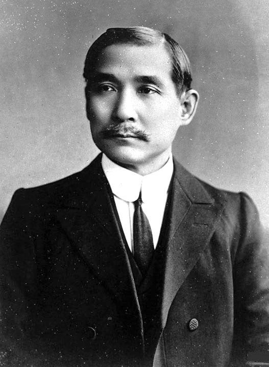
The Three People's Principles p. 418
Nationalism
Against rule by the Manchus and against domination by foreign powers.
Democracy
To Sun, elections and a constitution.
People's livelihood
A vague socialism: equalized landholding and curbs on capital.
Sun admitted that Chinese were unused to political participation. They could be led to democracy through a period of political tutelage, in which the revolutionaries would issue a provisional constitution and people would start by electing local officials. p. 418
The Manchu reform movement
p. 418
Amid the agitation, the court began edging toward parliamentary government. p. 418
- 11901. Empress Dowager Cixi announces a national school system and adds foreign government and science to the exams. New military academies and armies are trained by German or Japanese instructors. After Li Hongzhang dies (1901), Yuan Shikai becomes the top general, commanding the Northern Army and heading the Baoding Military Academy.
- 21905. The civil service examinations are abolished, ending a system that had framed relations between the state and the elite for a millennium. A mission goes abroad to study constitutions.
- 31906–1907. The mission recommends the Japanese model: the monarchy stays and grants the constitution, rather than one that makes the people sovereign. Plans are announced for national and provincial assemblies, with a full constitution by 1917.
- 41908. Cixi dies at seventy-three, a day after the Guangxu emperor (thirty-three) died suspiciously. She had chosen a three-year-old successor (Puyi†); his regents prove weak and dismiss Yuan Shikai.
- 51909. Provincial assemblies meet. Under 1 percent of the people could vote, yet the elections excite people. Assemblies circulate three petitions for an immediate national assembly; the last reportedly has 25 million signatures.
- 61910–1911. A provisional national assembly meets: 100 members elected by the provincial assemblies, 100 appointed by the court. In May 1911 the court names a cabinet dominated by Manchus.
The 1911 Revolution
pp. 418–419
Reform from above satisfied few. In October 1911 a revolutionary plot, set off by accident, began the 1911 Revolution. p. 418
From a stray bomb to fifteen provinces p. 418
- 1In Wuchang on the Yangzi, a bomb goes off by accident at a revolutionary group's headquarters.
- 2Police find lists of members, including many officers of the local new-army division.
- 3Facing certain execution, the officers stage a coup. Officials flee; the army holds the city in under a day.
- 4The rebels telegraph the provinces to declare independence. Within six weeks, fifteen provinces have seceded.
Yuan Shikai's bargain p. 419
The desperate court recalled Yuan Shikai to crush the rebels. Yuan dealt with both sides to see what each would give. The revolutionaries' worst fear was foreign intervention, so they compromised:
- a republic, with Yuan as president;
- the emperor abdicates but keeps the Forbidden City, a generous allowance, and much of his property.
Unlike the Bourbons or the Romanovs, the Manchu royal family suffered neither execution nor humiliation. The last emperor abdicated in February 1912; Yuan became president in March. Men cut off their queues, the symbol of submission to the Manchus, often forced by soldiers. p. 419
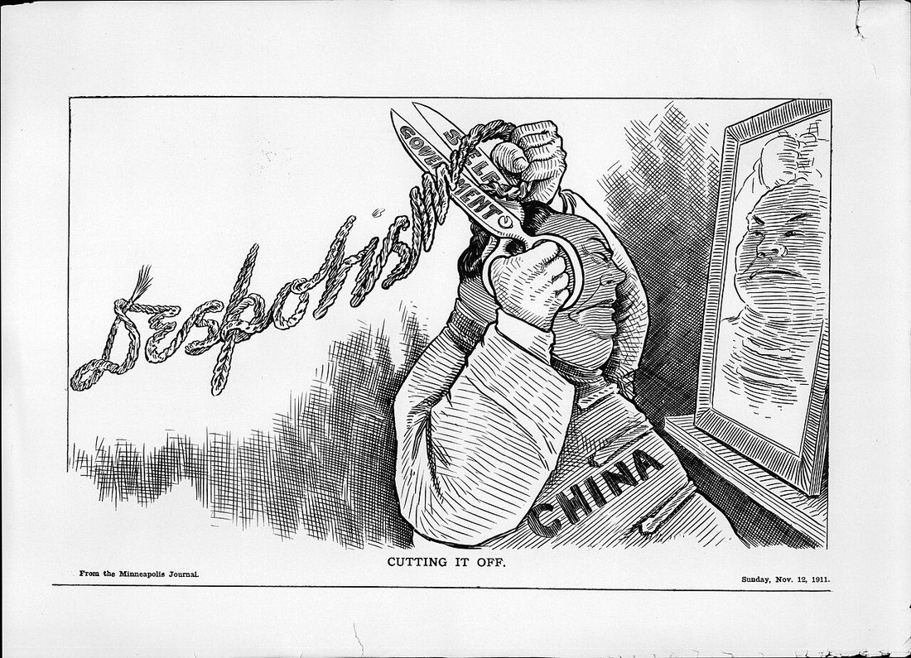
Yuan Shikai and the warlords
pp. 419–420
A strongman, not a republican p. 419
Yuan was a reformer of the old self-strengthening type: as governor he reformed education, commerce, and industry, and trained a modern army with German and Japanese advisers. He believed in central planning on the German and Japanese model and wanted a strong China, not a republican one. If assemblies could act as they pleased, how could China modernize quickly?
- 11913. Parliamentary elections go ahead; Sun's new Nationalist Party wins a plurality. Its organizer Song Jiaoren is assassinated; the public blames Yuan.
- 21913. Without the assembly's consent, Yuan takes a $100 million loan from a foreign consortium. The Nationalists revolt and seven provinces declare independence. This "second revolution" is routed; Sun flees to Japan again.
- 31913–1914. Yuan outlaws the Nationalist Party, then abolishes all assemblies down to the county level.
- 41915. He accepts most of Japan's Twenty-One Demands (May; Part 9), and in August announces he will become emperor. The educated elite, already alienated by his plan to make Confucianism the state religion, are outraged.
- 5June 1916. Yuan dies unexpectedly, and the protests die down.
He did push some progressive projects: more elementary schools, opium suppression, judicial reform. p. 419
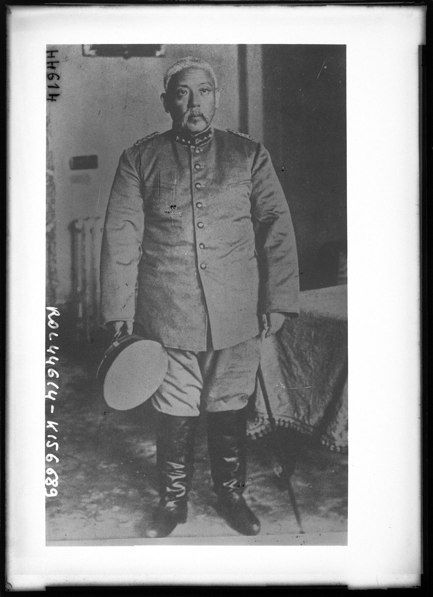
The warlord decade, 1916–1926 pp. 419–420
With no central strongman, commanders of Yuan's old army, provincial governors, and even gangsters built their own bases. The country came apart:
The edges break away
Tibet and Mongolia declared independence; Tibet came under British sway, Mongolia under Russian. Japan increasingly dominated Manchuria.
A shadow capital
A "government of sorts" in Beijing served whichever warlord held the region: six presidents and twenty-five cabinets. Sun Yatsen tried to build a base in the far south.
Wars in the north
For a while the key struggle was for the north, where the strongest warlords fought destructive wars. The map in Part 11 shows who held what by 1926.
What warlord rule did to China p. 420
- Infrastructure decayed: rail lines disrupted; Yellow River dikes neglected, causing catastrophic floods.
- Armies lived off the land, looting villages for pigs and grain.
- New taxes paid for weapons, which foreign powers happily sold, each backing a favorite.
- Opium returned: nearly eradicated in many places, it came back when warlords forced peasants to grow it for revenue.
The New Culture movement
pp. 420–422
Young people with modern educations felt they had inherited the literati's duty to advise the powerful, and that their schooling uniquely fitted them to "save" China. The 1911 revolution had dashed their hopes. The newly reorganized Beijing University became the center of the New Culture movement. p. 420
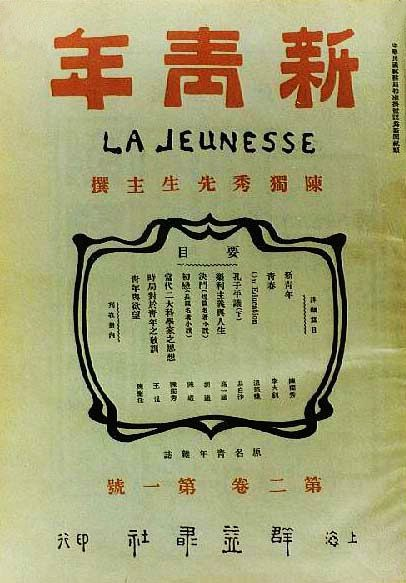
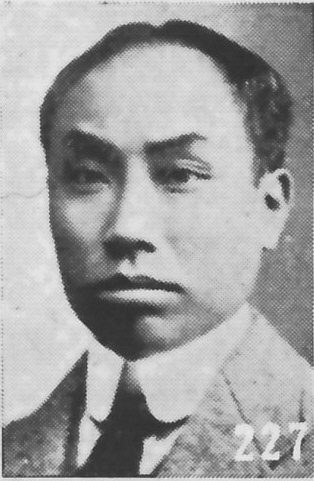
Chen Duxiu and New Youth p. 420
Chen Duxiu had a traditional education and took the exams before studying in Japan and France; he joined the 1911 revolution and became a zealous champion of individual freedom. He founded New Youth and became Beijing University's dean of letters. In its first issue (1915) he praised youth as being like early spring and the rising sun, and told readers not to waste time arguing with their elders. Confucianism, he wrote, was incompatible with the new society and state; loyalty, filial piety, chastity, and righteousness were "a slavish morality." Young people began defying their parents over school, work, and above all marriage, insisting on choosing their own spouses.
Hu Shi and the vernacular pp. 420–421
Hu Shi, back from seven years studying philosophy in the United States, led the push to drop the classical literary language, the educated person's mark for two thousand years: "A dead language can never produce a living literature."
Hu granted that the classical language had let speakers of mutually unintelligible dialects communicate. A national literature in the vernacular, he argued, would establish a standard dialect, as in France and Germany. New Youth was soon written entirely in the vernacular.
The idea caught on fast. In 1921 the Ministry of Education ruled that elementary textbooks would use the vernacular. By 1919 many other magazines for young people filled their pages with Western ideas: socialism, anarchism, democracy, liberalism, Darwinism, pragmatism, science. The goals were enlightenment and national survival. p. 422
Lu Xun (1881–1936) p. 422
One of the first to write the vernacular well. Lu Xun went to Japan in 1902 to study medicine after traditional doctors failed to cure his father's tuberculosis. A newsreel of the Russo-Japanese War, showing Chinese watching apathetically as Japanese executed a Chinese accused of spying, changed his mind: China's spirit mattered more than its bodies. He read widely in European, especially Russian, literature.
- "Diary of a Madman" (New Youth, May 1918), his first vernacular story: a man goes mad, or is taken for mad, after realizing that his elders' lofty values amount to cannibalism.
- "The True Story of Ah Q," his longest story: a low-status man, cowardly and self-deceiving, claims moral victory after every humiliation. In 1911 the old classical elite and the new foreign-educated elite shut him out of the revolution, which executes him for a robbery he never managed to commit.
Lu Xun spoke for people tired of the old order but wary of easy solutions, and he blamed China's own flaws more than foreigners.
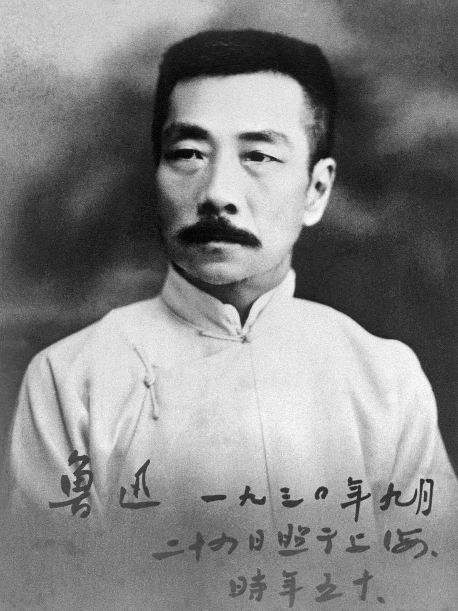
Lu Xun's "Sudden Notions" (February 1925)
Lu Xun rejected calls to preserve China's "national character" or "national essence." Reading history, he saw undesirable patterns repeating, not glories. The essay's argument, in brief:
- The dynastic histories do reveal China's soul, but the truth is buried in flowery phrases; unofficial anecdotes show it more plainly.
- Compare the late Ming, the Five Dynasties, or the Southern Song with the 1920s and they are strikingly alike. The Republic is still the China of those ages; it has "not yet reached the limit" of corruption and cruelty.
- If national character never changes, the fate is "the same old story." But no one can be sure it won't change, which means both the threat of annihilation and the hope of an unprecedented revival.
- That hope is undercut by "clever people": boosters of the ancient culture, slanderers of the modern, and fake modernizers. They adapt to any master, as Qing-era Chinese writers praised the Manchu army as "our army." Because such people always survive, China keeps repeating its fate.
Source: Lu Xun: Selected Works, trans. Yang Xianyi and Gladys Yang (Foreign Languages Press, 1980), as excerpted on p. 423. The book's questions are in the Review kit.
Goals, evils, and doubters p. 426
- Nationalism and patriotism
- Progress and science
- Democracy and freedom
- Imperialism and warlordism
- Feudalism and autocracy
- Patriarchy and blind adherence to tradition
Intellectuals struggled with how to be strong and modern yet still Chinese. Western thinkers lectured in China: Bertrand Russell (1920–21), Albert Einstein and Margaret Sanger (1922), and John Dewey (1919–21), who was struck by how eagerly students took up new ideas and how little anyone defended the status quo. Others turned against the West as too materialistic and feared China would lose its "national essence." Liang Qichao, now a conservative, preferred China's humanistic culture to Western rationalism and hedonism. p. 426
Shanghai's Great World pleasure palace
pp. 420–421
Even entertainment changed. Malls and window shopping were once new and controversial, and in China they usually appeared first in Shanghai. In 1917 an entrepreneur who had made his fortune in medicine built the Great World, a six-story amusement park billed as the Crystal Palace and Coney Island in one, at a crossroads in the International District. Outside, it piled up European motifs, with columns holding up a decorative tower; inside it catered to Chinese tastes and mostly Chinese customers. Pick a floor. p. 421
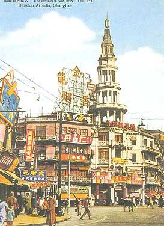
Read it as a source: European on the outside, Chinese in its customers and pastimes inside. Old entertainments (sing-song girls, storytellers, a temple, marriage brokers) stood beside new ones (slot machines, ice cream parlors, photographers). p. 421
Industrial development
pp. 422–425
Despite the turmoil, a modern economy began to take off. p. 422
- 11872. Li Hongzhang starts the China Merchant Steamship Navigation Company, a government-supervised venture rather than a truly capitalist one.
- 21895. Japan wins the right to open factories in China; other powers follow, drawn by very low labor costs.
- 3By 1914. An emerging bourgeoisie of merchants, bankers, industrialists, compradors, and overseas Chinese traders. Foreign investment, especially Japanese, grows fast.
- 41900s–1910s. Chambers of commerce spread; after 1915, as the national government decays, they often run cities' sanitation, schools, and police.
Returned students took jobs in modern firms, where foreign degrees brought prestige and higher pay. p. 422
| Graduate of | Monthly pay | Relative to a Chinese college |
|---|---|---|
| Chinese college | 80 | |
| Japanese college | 100–120 | |
| Japanese imperial college | 150 | |
| Western college | 200 | |
| Harvard, Yale, Oxford, Cambridge | 250 |
Bars scaled to 250 yuan; the Japanese-college bar uses the 110-yuan midpoint.
World War I: a boom p. 422
With Britain, France, Germany, and Russia at war, Western imports fell sharply, Chinese manufacturers sold at better prices, and demand for Chinese exports rose.
Telephone and electric companies reached county seats and market towns. New fortunes were made: the Rong brothers, merchants from Wuxi, built flour mills in 1901 and 1913 and eight new factories between 1914 and 1920, moving into textiles. pp. 422, 424
Factory conditions in the 1910s were as bad as Britain's a century before: twelve-hour days, seven-day weeks, and child labor, especially in textile mills. Labor contractors recruited in the countryside and held workers in debt slavery with minimal food and housing. Many factories were foreign owned, increasingly by Japanese, which sharpened conflict between managers and workers.
Sophia Chen (1890–1976) and H. C. Zen (1886–1961), a modern couple
The first generation back from study abroad found plenty of work for their skills. Many returned to marry spouses their families had chosen; Chen and Zen chose each other abroad.
H. C. Zen (Ren Hongjun)
- 1904–1905 Educated family in Sichuan; modern middle school; takes the first exam stage, then the exams are abolished.
- Tokyo Technical college; joins Sun's Revolutionary Alliance.
- 1911–1912 Returns at the revolution; at twenty-five, secretary to the president. Resigns in disagreement with Yuan Shikai.
- 1912–1917 Chemistry at Cornell and Columbia (master's); friend of Hu Shi. Helps found the Science Society of China, president 1914–1923.
- 1917–1937 Peking University and Ministry of Education; Commercial Press editor (1922); vice chancellor of Nanjing University; head of National Sichuan University (1935–1937).
Sophia Chen (Chen Hengzhe)
- Youth Official family in Jiangsu; tutored at home or in poor schools. Persuades her father to cancel her arranged engagement so she can study.
- 1914 At twenty-four, wins a Boxer Indemnity scholarship; history at Vassar.
- 1920 Master's, University of Chicago. First woman offered a professorship at Peking University. Marries Zen.
- 1924–1925 Teaches Western history at Nanjing, then stops teaching to write. Her History of the West goes through many printings.
- 1930s Co-founds and edits the liberal Independent Critic.
During the war with Japan, Zen ran the Academia Sinica's Institute of Chemistry in Kunming, keeping research going, then took posts in Chongqing. Both made later trips to the United States. After 1949 they stayed in Shanghai; two of their three children settled in the United States. p. 424
The May Fourth Incident
pp. 425–426
Japan presses its advantage p. 425
In 1914 Japan, allied with Britain and France, seized Germany's territories in China. In 1915, with Europe busy with war, it presented Yuan Shikai with the Twenty-One Demands:
Most of the demands
Economic privileges in various regions, and confirmation of Japan's hold on the former German leasehold in Shandong.
The fifth group
Japanese advisers in key organs of the government, even the police: in effect a Japanese protectorate. Japan dropped it after anti-Japanese protests but gave Yuan an ultimatum on the rest. He accepted on May 7, later called National Humiliation Day.
Betrayal at Versailles p. 425
China joined the Allies in 1917. It sent no combatants but sent some 140,000 laborers to France, who unloaded ships and dug trenches. China expected a reward, especially given Woodrow Wilson's stress on national self-determination. But Japan had secret agreements with Britain, France, and Italy backing its claim to German rights in Shandong, and the consent of the warlord government in Beijing (1918). At Versailles China's delegates were not even admitted; Japan's sat at the table with the Western powers.
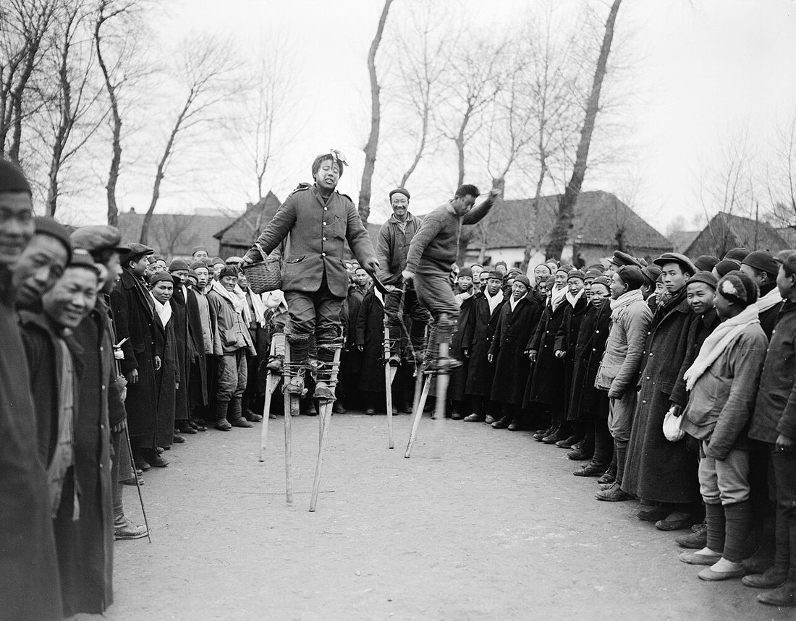
May 4, 1919, and after pp. 425–426
- 1News arrives that the decision favors Japan. About 3,000 Beijing students rally at Tiananmen, shouting patriotic slogans.
- 2Some break through police lines, beat a pro-Japanese official, and burn a cabinet minister's house. Leaders are arrested.
- 3Protest spreads nationwide. Teachers, workers, the press, merchants, Sun Yatsen, even the warlords back the students; Japanese goods are boycotted; strikes close schools in more than two hundred cities.
- 4The Beijing government arrests 1,150 students, turning parts of Beijing University into a jail. Sympathy strikes, especially in Shanghai, force their release.
- 5The cabinet falls, and China refuses to sign the Versailles Treaty.
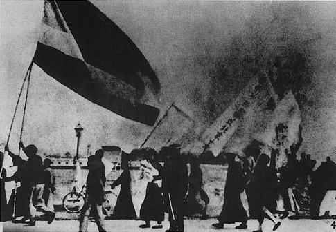
The students' moral victory set the tone of cultural politics into the 1930s. The personal and intellectual goals of the New Culture movement (individual freedom, the vernacular, science) ran alongside, and sometimes against, the national-power goals of the May Fourth movement. p. 425
The women's movement
pp. 426–428
Every major reformer and revolutionary, from Kang Youwei and Liang Qichao to Sun Yatsen, Chen Duxiu, Lu Xun, and Mao Zedong, called for new thinking about women. Early in the century the key issues were foot binding and education. p. 426
Ending foot binding pp. 426–427
In a short time, secluded women with tiny feet went from a point of pride in Chinese refinement to an embarrassing sign of backwardness. Campaigners said the custom crippled much of the population and stood in the way of modernization. The first anti–foot binding societies (1890s) were men who pledged to leave their daughters' feet natural and to marry their sons to women with natural feet. After 1930 only girls in remote areas were still bound. Bound feet were seen on the streets into the 1970s or later, because binding was hard and painful to reverse after age ten or twelve.
Qiu Jin (d. 1907) p. 426
As women entered mission schools, government schools, and schools abroad, some entered politics. Qiu Jin became an ardent nationalist after the Boxer Rebellion and the foreign occupation of Beijing.
- 1904: leaves an unhappy marriage for a girls' vocational school in Japan; devotes herself to revolution, even learning to make bombs.
- Attacks female infanticide, foot binding, arranged marriage, wife beating, and the cult of widow chastity; tells women they are complicit when they make pleasing men their goal.
- 1906: founds the Chinese Women's Journal in Shanghai and teaches at a girls' school.
- 1907: executed for her part in a failed uprising.
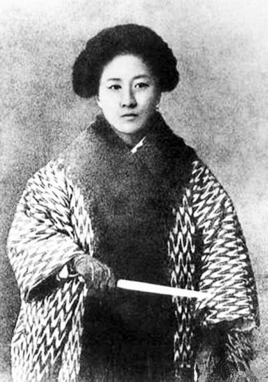
Girls in school pp. 426–427
In 1907 the Qing ordered schools opened for girls. Schools offered more than literacy: a respectable way to meet unrelated people. After 1920 higher education opened up, and more city women worked as teachers, nurses, and civil servants.
New ideas, old law pp. 427–428
- Young women read New Youth as avidly as their brothers.
- Lu Xun's essay on chastity: a woman who killed herself to avoid rape won glory, but no writer would honor one who killed herself after being raped. In "The New Year's Sacrifice," a widow forced to remarry is seen as ill-omened when her second husband dies; she ends up begging, afraid she will be split in two after death to serve two husbands.
- Ibsen's A Doll's House, translated in New Youth and staged widely: could women, like Nora, leave the old system and make their own identities?
- Campaigns for the vote mostly failed. In the 1920s both the Nationalist and Communist parties set up women's departments and called for equal rights and freedom of marriage and divorce.
- Divorce was hardest. Sun's widow Song Qingling explained the bind: refuse women's appeals and they lose faith; grant them and the peasant unions object, since a poor peasant struggles to get a wife and has often paid dearly for an unwilling one.
Reunification by the Nationalists
pp. 428–429
Yuan's easy victory showed the revolutionaries they needed an army of their own. In 1917 Sun went to Guangzhou, then held by warlords, to form a military government. p. 428
Why Russia? p. 428
Sun's reasoning
After the Bolshevik Revolution (1917), Russia looked like a better model than Japan: a large, backward, despotic, peasant monarchy with a small educated elite, like China. Why couldn't its kind of revolution work in China?
Moscow's reasoning
In Marxist–Leninist stages, China had not yet had its bourgeois stage, so a Nationalist victory over the imperialists was the next step. A weak China might also invite Japan, the Soviets' main worry in the east.
Building a party and an army p. 428
- 11920. Sun turns to the Comintern. Adviser Michael Borodin drafts a Nationalist Party constitution with a more hierarchical chain of command. To critics who said it copied the Communists, Sun replied that only Russia and oppressed peoples would sympathize with them.
- 21921–1922. A small Chinese Communist Party forms with Comintern guidance (1921, Ch. 25). On Comintern urging the two parties form the United Front (1922): Communists join the Nationalist Party as individuals while keeping separate activities. Sun agrees, sure a few Communists pose no threat.
- 31923. Chiang Kaishek trains in the Soviet Union for four months.
- 41924. With Borodin's help and Soviet money, Chiang opens the Whampoa Military Academy near Guangzhou. The Communist Zhou Enlai, back from France, is deputy head of political education. The first class: nearly 500 cadets aged 17–24, schooled in the Three People's Principles and fiercely loyal to Chiang.
- 5By 1925. About 1,000 Russian military advisers help build a party army. The Comintern also sends Ho Chi Minh, who organizes Vietnamese exiles in south China.
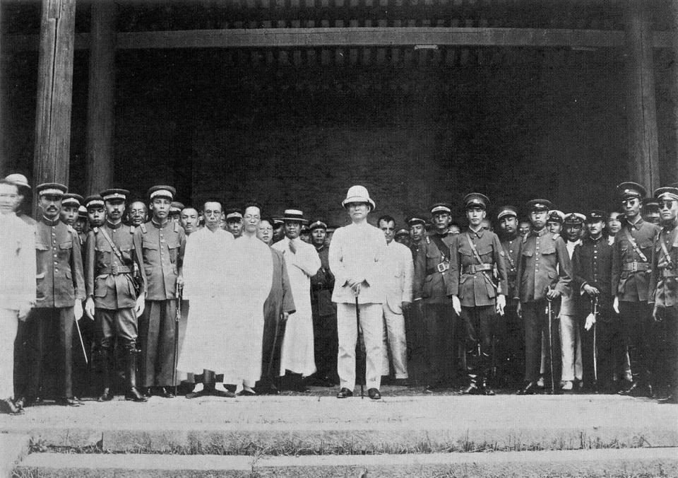
The spark and the march pp. 428–429
- May 30, 1925: police in Shanghai's foreign-run International Settlement fire on unarmed demonstrators, killing eleven. Three weeks later in Guangzhou, foreign troops kill fifty-two. A fifteen-month boycott of British goods and Hong Kong trade follows. The moment seems ripe to fight "the twin evils of warlordism and imperialism."
- 1925: Sun dies of cancer before the expedition starts. The party strains between leftists close to the Communists and rightists who think Borodin too powerful and the Communists "a party within the party."
- July 1926: the two-pronged Northern Expedition sets out under Chiang, with Russian advisers. Communists and left-wing Nationalists go ahead, organizing peasants and workers. Many warlords join; others are beaten.
- End of 1926: the government moves from Guangzhou to Wuhan, where the left wing dominates. Early 1927: the army is ready to attack Shanghai, which will end the United Front (Unit 13).
How different was China in 1927 from 1900?
pp. 428–429
The Qing tried reform from above, but a small band of revolutionaries toppled it and Yuan Shikai, its strongest general, became president. He soon outlawed the Nationalists, abolished the assemblies, and tried to make himself emperor; after his death, commanders became warlords. Yet society and culture changed fast. New Youth attacked filial piety and arranged marriage and championed the vernacular; May Fourth pulled more young people into politics; girls' schools spread; factories multiplied. Sun Yatsen built a revolutionary party and army with Soviet help, and after his death Chiang Kaishek led it north.
- A two-thousand-year monarchy
- Confucianism taken as an obvious good
- The exam system links state and elite
- Few people know the West
- Women secluded; foot binding a mark of refinement
- Monarchy gone; political parties exist
- Nationalism a powerful force
- Individualism and democracy openly debated
- Modern schools, new publications, study abroad
- Students as political actors; women in public roles; an urban proletariat
The chapter ends with the Nationalist army outside Shanghai. Unit 13 picks up the break with the Communists in 1927, the Nanjing government, and Mao's rise. Japan's pressure, from the Twenty-One Demands to Shandong, leads to the war of Unit 14. p. 429
Test yourself
Flashcards
Who's who
| Person | Why they matter |
|---|---|
| Empress Dowager Cixi | Launched the late-Qing reforms (1901–1908): schools, end of the exams, constitutional plans; died 1908 |
| Yan Fu | Translator of Mill and Montesquieu; the West's strength came from freeing the individual |
| Kang Youwei · Liang Qichao | Reformers in exile in Japan; Liang favored statist constitutional monarchy, later a conservative |
| Zou Rong | Wrote a racial anti-Manchu tract at nineteen (1903) |
| Sun Yatsen | Revive China Society; Revolutionary Alliance (1905); Three People's Principles; Nationalist leader; died 1925 |
| Yuan Shikai | Top Qing general; brokered the abdication; president 1912; tried to become emperor (1915); died 1916 |
| Song Jiaoren | Nationalist organizer, assassinated after the 1913 elections |
| Chen Duxiu | Founded New Youth; Beijing University dean of letters; attacked Confucianism |
| Hu Shi | Led the movement to write in the vernacular |
| Lu Xun | "Diary of a Madman," "Ah Q," "Sudden Notions"; blamed China's own flaws |
| Qiu Jin | Feminist revolutionary; Chinese Women's Journal; executed 1907 |
| Sophia Chen · H. C. Zen | Returned-student couple; first woman professor at Peking University; Science Society of China |
| Rong brothers | Wuxi industrialists who expanded during World War I |
| John Dewey · Bertrand Russell | Western thinkers who lectured in China, 1919–1921 |
| Michael Borodin | Comintern adviser who reorganized the Nationalist Party |
| Chiang Kaishek | Trained in the USSR (1923); head of Whampoa; commanded the Northern Expedition |
| Zhou Enlai | Communist deputy head of political education at Whampoa |
| Song Qingling | Sun's widow; described the divorce dilemma |
| Zhang Zuolin · Wu Peifu · Feng Yuxiang | Warlords on the textbook's 1926 map (Manchuria, the center, the northwest) |
Key dates
| 1901 | Boxer Protocol; Qing reforms begin |
| 1903 | Zou Rong's tract; Liang Qichao in the United States |
| 1905 | Exams abolished; Revolutionary Alliance; Japan defeats Russia |
| 1905–1907 | Boycotts of the United States |
| 1907 · 1908 | Assemblies planned; girls' schools ordered; Qiu Jin executed · Cixi dies |
| 1909 · 1910 | Provincial assemblies · provisional national assembly |
| 1911 | Manchu-heavy cabinet (May); Wuchang uprising (October) |
| 1912 | Emperor abdicates (February); Yuan president (March) |
| 1913 · 1914 | Elections, Song Jiaoren killed, second revolution · assemblies abolished |
| 1915 | Twenty-One Demands (May 7); New Youth; Yuan's monarchy bid |
| 1916 · 1917 | Yuan dies · China joins the Allies; Great World opens; Sun to Guangzhou; Bolshevik Revolution |
| 1918 · 1919 | "Diary of a Madman" · May Fourth; Versailles not signed |
| 1921 · 1922 | Vernacular textbooks; CCP founded · United Front |
| 1923 · 1924 | Chiang in the USSR · Whampoa opens |
| 1925 | Sun dies; May 30 shootings; boycott of Britain |
| 1926 · 1927 | Northern Expedition (July); government to Wuhan · army before Shanghai |
Discussion questions
Open each for points the reading gives you to work with. The first five are the chapter's opening questions; the next is its closing question; the last four are the textbook's questions on its Documents and Biography features.
Who led the changes in China's economy, education, and political organization?
- Local elites building schools and periodicals (p. 416); chambers of commerce running cities (p. 422).
- Students and returnees from Japan and the West (pp. 417, 422, 424); Beijing University intellectuals (p. 420).
- The Qing court itself, 1901–1911 (p. 418), and later the Nationalists with Soviet help (p. 428).
How was resistance to change overcome?
- Nationalist shame (students in Tokyo, p. 417) made old customs like foot binding embarrassing (p. 426).
- Pledges in anti–foot binding societies; state orders on exams (1905), girls' schools (1907), vernacular textbooks (1921).
- But resistance stayed strong in the countryside: rural women under 2% literate (p. 427); divorce opposed by peasant unions (p. 428).
What role did foreign countries play?
- Burdens: the Boxer indemnity (p. 416), arms sales to warlords (p. 420), the Twenty-One Demands and Shandong (p. 425), May 30 (p. 428).
- Models and help: Japan as incubator and model (pp. 417–418), Western ideas and lecturers (pp. 417, 426), Soviet advisers and money (p. 428), Boxer Indemnity scholarships (p. 424).
- The WWI boom came from Europe's absence (p. 422).
Did militarization slow change down or speed it up?
- Slowed: broken railways, floods, looting, opium, new taxes (p. 420).
- But a weak center let chambers of commerce and intellectuals act on their own (pp. 420, 422), and the new armies made the 1911 coup possible (p. 418). Reunification itself came through an army (p. 428).
Which changes were felt even by farmers in the countryside?
- Warlord armies, taxes, and forced opium growing (p. 420); labor recruiting for factories (p. 425).
- Peasant associations and unions organized by the Northern Expedition's vanguard (pp. 428–429).
- Much less so schooling and women's literacy (p. 427).
How different was China in 1927 compared to 1900?
- Monarchy gone, parties formed, nationalism strong, Confucianism questioned, students and women active in public, an urban proletariat (p. 429).
- Still divided among warlords, and the new ideas reached the countryside slowly.
Documents: Which features of China's past did Lu Xun think persisted to his day?
- Corruption, disorder, cruelty, and despotism like the late Ming, Five Dynasties, or Southern Song (p. 423).
- A "national character" that repeats "the same old story," kept alive by people who adapt to any ruler.
Documents: Why does Lu Xun think clever people have a better chance of surviving?
- They suffer nothing even if China collapses, because they adapt to whoever rules, as Chinese writers praised the Manchu army as "our army" (p. 423).
- Their survival is exactly why China repeats its fate.
Biography: How were the lives of Chen and Zen shaped by the period in which they lived?
- The end of the exams sent Zen abroad; the revolution gave him a post at twenty-five; Yuan's rule sent him away again (p. 424).
- Boxer Indemnity scholarships and new universities gave Chen chances no earlier woman had; she broke off an arranged engagement; war moved them to Kunming and Chongqing.
Biography: What difference did it make that Chen and Zen had studied abroad?
- Prestige and higher pay (Table 1, p. 422); posts at Peking University, the Commercial Press, Nanjing University.
- They chose each other rather than family-arranged spouses, and joined networks like Hu Shi's and the Science Society.
Key terms
Click to expand
Terms are grouped by topic. Where a term depends on another, the entry says what it builds on, so read those first. Hover or tap any dotted term in the text for a quick definition, or open ✎ at the bottom right. † marks a term or fact from outside the textbook. Terms from earlier units are repeated briefly where you need them.
From earlier units (review)
- Boxer Rebellion
- The 1899–1900 anti-foreign, anti-Christian uprising that the Qing court supported. Foreign armies occupied Beijing, and the Boxer Protocol of 1901 imposed heavy penalties. p. 416; Unit 6
- Self-strengthening
- The late-nineteenth-century Qing program of adopting Western weapons, ships, and industry while keeping the Confucian order. Yuan Shikai was a reformer of this type. p. 419; Unit 6
- Empress Dowager Cixi
- The dominant figure at the late Qing court. After the Boxer disaster she launched schools, military reform, the end of the exams, and constitutional plans. She died in 1908. p. 418; Unit 6
- Kang Youwei and Liang Qichao
- Leaders of the failed 1898 reforms, who settled in Japan. Liang's magazines promoted a statist "democracy" and constitutional monarchy; by the 1920s he was a conservative. pp. 417, 426; Unit 6
- Queue
- The long braid, with the front of the head shaved, that the Manchus required of Chinese men. Cutting it off became a sign of support for the revolution. pp. 417, 419; Unit 2
- Secret societies (Triads)
- Anti-Manchu brotherhoods with large followings across provinces in south China. Sun hoped to use them as the muscle for uprisings. p. 417; Unit 2
- Extraterritoriality
- The treaty right of foreigners in China to be tried under their own countries' laws, a target of protest in the treaty ports. p. 417; Unit 5
- Leasehold
- Territory a power rented from China for a term but controlled in practice, such as Germany's leasehold in Shandong, which Japan claimed. p. 425; Unit 10
- Protectorate
- A country that keeps its own government in name while a stronger power controls it. Japan's fifth group of demands would have made China, in effect, a Japanese protectorate. p. 425; Unit 11
- Filial piety
- The Confucian duty of children to obey and serve their parents. New Youth attacked it as "slavish morality." p. 420; Unit 2
The end of the monarchy
- Boxer indemnity
- The 450 million silver dollars the Boxer Protocol (1901) required, payable in thirty-nine installments from customs revenue. With other debts it consumed the customs income. p. 416Builds on: Boxer Rebellion
- Local activism
- Modernizing work done by local elites when the state could not: new schools, periodicals, railway buy-backs, boycotts. pp. 416–417
- Nationalism
- The drive to rebuild China as a nation of the Chinese people strong enough to resist foreign threats; central to the period's politics and culture. p. 415
- Social Darwinism
- The application of "survival of the fittest" to nations and races, locked in competition. Many thought it described China's plight. p. 417
- Zou Rong
- A nineteen-year-old whose 1903 tract called for a revolutionary army to destroy the Manchus and cast the Han race as their slaves. p. 417Builds on: Social Darwinism
- Revive China Society
- Sun Yatsen's first revolutionary society, with chapters in Hawaii and Hong Kong; its uprisings relied on secret societies and failed. p. 418Builds on: secret societies
- Revolutionary Alliance
- Formed in Japan in 1905 when Sun joined the radical students. It sponsored seven or eight uprisings in the following years. p. 418Builds on: Revive China Society
- Three People's Principles
- Sun's program: nationalism (against the Manchus and foreign powers), democracy (elections and a constitution), and the people's livelihood (equal landholding, curbs on capital). Whampoa cadets were trained in it. pp. 418, 428
- Political tutelage
- Sun's idea of a stage in which revolutionaries guide the people toward democracy, with a provisional constitution and local elections first. p. 418Builds on: Three People's Principles
- Abolition of the examinations
- In 1905 Cixi abolished the civil service examinations, which had framed relations between government and elite for a millennium. p. 418
- Constitutional monarchy
- A monarchy limited by a constitution. The Qing's mission chose Japan's model, in which the monarch grants the constitution rather than the people being sovereign; a full constitution was promised by 1917. p. 418
- Provincial assemblies
- Elected bodies that met in 1909 (voters under 1% of the people) and petitioned for a national assembly; abolished by Yuan in 1914. pp. 418–419Builds on: constitutional monarchy
- Puyi (Xuantong emperor)†
- The three-year-old Cixi chose as successor in 1908, the last Qing emperor; he abdicated in February 1912. The textbook does not name him; his name is from outside sources. pp. 418–419
- Wuchang uprising
- The October 1911 army coup in Wuchang, set off when an accidental bomb exposed revolutionary officers; within six weeks fifteen provinces seceded. p. 418
- 1911 Revolution
- The overthrow of the Qing (October 1911–February 1912), ending two thousand years of monarchy. In Chinese it is the Xinhai Revolution†, after the year's name in the sixty-year cycle. pp. 418–419, 429Builds on: Wuchang uprising
Republic and warlords
- Yuan Shikai
- The strongest Qing general, a self-strengthening reformer who brokered the abdication and became president in 1912. He crushed the Nationalists, abolished assemblies, and announced in 1915 he would be emperor; he died in 1916. pp. 418–419
- Nationalist Party (Guomindang)
- Sun Yatsen's party, which won a plurality in 1913, was outlawed by Yuan, and was reorganized with Soviet help in the 1920s. Guomindang is the pinyin form used on the textbook's map; older spelling Kuomintang (KMT)†. pp. 416, 419, 428Builds on: Revolutionary Alliance
- Song Jiaoren
- The Nationalists' key organizer, assassinated after the 1913 elections; the public blamed Yuan. p. 419
- Second revolution
- The Nationalist-led revolt of summer 1913, when seven provinces declared independence from Yuan; it was routed. p. 419
- Warlord
- A military commander who ruled a region with his own army after Yuan's death (1916), living off the land, taxing, and buying foreign arms. pp. 419–420Builds on: Yuan Shikai
- Twenty-One Demands
- Japan's 1915 demands on Yuan's government for economic privileges and the Shandong leasehold; a fifth group, dropped, would have made China a protectorate. p. 425Builds on: leasehold, protectorate
- National Humiliation Day
- May 7, the day in 1915 Yuan accepted Japan's ultimatum; later commemorated under this name. p. 425Builds on: Twenty-One Demands
New culture and May Fourth
- Beijing (Peking) University
- The newly reorganized university at the center of the New Culture movement, where Chen Duxiu was dean and Hu Shi taught. p. 420
- New Culture movement
- The intellectual movement of the late 1910s and 1920s that attacked Confucian values, championed individual freedom, science, and democracy, and promoted the vernacular. pp. 420–422, 425
- New Youth
- The magazine Chen Duxiu founded in 1915; it attacked filial piety, published Lu Xun, and was soon written entirely in the vernacular. pp. 420–422Builds on: New Culture movement
- Chen Duxiu
- Founder of New Youth and dean of letters at Beijing University, a champion of individual freedom and critic of Confucianism. He was later the Communist Party's first secretary general (Unit 13). p. 420; p. 440
- Classical literary language
- The written Chinese of the educated for two thousand years, distant from speech but shared across dialects. pp. 420–421
- Vernacular
- Written Chinese close to everyday speech (baihua†). Promoted by Hu Shi and Chen Duxiu; elementary textbooks adopted it in 1921. pp. 421–422Builds on: classical literary language
- Hu Shi
- Beijing University professor, trained in philosophy in the United States, who led the vernacular movement: "A dead language can never produce a living literature." pp. 420–421Builds on: vernacular
- Lu Xun
- Writer (1881–1936) who gave up medicine for literature; "Diary of a Madman" (1918), "The True Story of Ah Q," and essays blaming China's own flaws. pp. 422–423
- National essence
- The core of Chinese culture that conservatives such as the later Liang Qichao feared losing to Western materialism; Lu Xun rejected the idea. pp. 423, 426
- Laborers to France
- About 140,000 workers China sent after joining the Allies in 1917, to unload ships and dig trenches; known as the Chinese Labour Corps†. p. 425
- May Fourth Incident / movement
- The student protest of May 4, 1919, against giving Germany's Shandong rights to Japan at Versailles, which spread nationwide and kept China from signing; and the patriotic movement for national power that followed. pp. 425, 429Builds on: Twenty-One Demands
- Tiananmen
- The square in front of the old palace in Beijing where some 3,000 students gathered on May 4, 1919. p. 425
- Boycott
- Refusing to buy a country's goods in protest: the United States (1905–1907), Japan (1919), Britain and Hong Kong (1925–1926). pp. 417, 425, 428
Economy and society
- Great World
- A six-story amusement park in Shanghai's International District (1917), with gaming, theater, food, services, and marriage brokers. p. 421
- Bourgeoisie
- The emerging capitalist class of merchants, bankers, industrialists, compradors, and overseas Chinese traders. p. 422
- Comprador
- A Chinese manager or agent working for a foreign firm. p. 422
- Chambers of commerce
- Business associations that gave the bourgeoisie a political voice; after 1915 they often ran city sanitation, education, and police. p. 422Builds on: bourgeoisie
- Labor contractors
- Middlemen who recruited factory workers in the countryside and kept them in debt slavery with minimal food and housing. p. 425
- Boxer Indemnity scholarships
- Scholarships for study in the United States, awarded by examination; Sophia Chen won one in 1914. They were funded from indemnity money the United States returned†. p. 424Builds on: Boxer indemnity
- Science Society of China
- An organization that sponsored scientific books, translations, lectures, and exhibitions; H. C. Zen was its president 1914–1923. p. 424
Women
- Foot binding
- Tightly binding girls' feet to keep them small; once a sign of refinement, it became a symbol of China's backwardness and nearly ended after 1930. pp. 415, 426
- Anti–foot binding societies
- Societies founded in the 1890s whose members pledged not to bind their daughters' feet and to marry their sons to women with natural feet. p. 426Builds on: foot binding
- Qiu Jin
- A nationalist and feminist who studied in Japan, founded the Chinese Women's Journal (1906), and was executed in 1907 after a failed uprising. p. 426
- A Doll's House (Nora)
- Ibsen's play, translated in New Youth; its heroine Nora, who leaves her husband, made women debate creating their own identities. p. 427
- Song Qingling
- Sun Yatsen's widow, who described the conflict between women seeking divorce and peasant unions opposing it. pp. 427–428
Reunification
- Bolshevik Revolution
- The 1917 revolution in Russia that made Sun see Russia as a better model than Japan. p. 428
- Comintern
- The Communist International, which Lenin founded to promote revolution worldwide; it advised both the Nationalists and the Chinese Communists. p. 428Builds on: Bolshevik Revolution
- Michael Borodin
- The Comintern's chief adviser to Sun, who drafted a more hierarchical party constitution and helped found Whampoa. p. 428Builds on: Comintern
- Whampoa Military Academy
- The officers' academy near Guangzhou (1924) led by Chiang Kaishek and funded partly by the Soviet Union; its cadets stayed loyal to Chiang. p. 428Builds on: Borodin
- Chinese Communist Party (CCP)
- The party founded in July 1921 with Comintern guidance; much smaller than the Nationalists throughout the 1920s. p. 428; p. 440Builds on: Comintern
- United Front
- The alliance formed in 1922 on Comintern urging, in which Communists joined the Nationalist Party as individuals while keeping their own activities. It ended in 1927. pp. 428–429Builds on: Nationalist Party, CCP
- May 30, 1925
- The day police in Shanghai's International Settlement killed eleven unarmed demonstrators; with a Guangzhou shooting it set off a fifteen-month boycott of Britain. Often called the May Thirtieth Movement†. p. 428
- Northern Expedition
- The Nationalist army's campaign from Guangzhou, launched July 1926 under Chiang Kaishek, to defeat or absorb the warlords and reunify China. pp. 415, 428–429Builds on: Whampoa, United Front
- Wuhan government
- The Nationalist government after it moved from Guangzhou to Wuhan at the end of 1926, dominated by the party's left wing. p. 429Builds on: Northern Expedition
Sources and further reading
- Main text: Patricia Buckley Ebrey & Anne Walthall, Modern East Asia from 1600: A Cultural, Social, and Political History, 3rd ed. (Cengage, 2013), Ch. 24, "Remaking China (1900–1927)," pp. 415–429, including Material Culture: "Shanghai's Great World Pleasure Palace" (p. 421), Documents: "Lu Xun's 'Sudden Notions'" (p. 423), Biography: "Sophia Chen and H. C. Zen, a Modern Couple" (p. 424), and Map 24.1 (p. 416). The founding of the Communist Party (1921) is from Ch. 25, p. 440.
- Outside facts (marked †): the hero heading 辛亥 · 五四 ("Xinhai · May Fourth"); the name Puyi; the terms Xinhai Revolution, baihua, Chinese Labour Corps, May Thirtieth Movement, and Kuomintang; that Boxer Indemnity scholarships were funded from returned U.S. indemnity money; the date of the New Youth cover. The textbook's map spells one warlord "Yan Yishan"; standard pinyin is Yan Xishan†, used here. Image titles, dates, and makers come from each image's catalog record.
- Explore further: Wikipedia, "1911 Revolution", "Warlord Era", "May Fourth Movement", and "Northern Expedition", for background (follow the textbook where they differ); Lu Xun's stories in English at the Lu Xun Internet Archive; Chow Tse-tsung, The May Fourth Movement (Stanford, 1960), cited in the chapter.
- Books cited in the chapter: Douglas R. Reynolds, China, 1898–1912 (1993); Michael Gasster in Cambridge History of China, vol. 11; Leo Ou-fan Lee in vol. 12; James E. Sheridan, China in Disintegration (1975); Ssu-yu Teng and John K. Fairbank, China's Response to the West (1971); C. Martin Wilbur and Julie Lien-ying How, Missionaries of Revolution (1989); Anna Louise Strong, China's Millions (1928); Lu Xun: Selected Works, trans. Yang Xianyi and Gladys Yang (1980).
- Map data: coastlines and borders from Natural Earth (public domain), via the world-atlas package.
Image credits
- Sun Yatsen, signed portrait by the Tongsheng studio, Shanghai, 1911 (National Museum of China): public domain, Wikimedia Commons.
- Charles L. Bartholomew, "Cutting It Off," Minneapolis Journal, 1911 (Hennepin County Library): public domain, Wikimedia Commons.
- Agence Rol, Yuan Shikai, 1915 (Bibliothèque nationale de France): public domain, Wikimedia Commons.
- Cover of New Youth (Peking University Library): public domain, Wikimedia Commons.
- Chen Duxiu, from Saishin Shina yōjinden (Asahi Shimbun, 1941): public domain, Wikimedia Commons.
- Lu Xun, 1930: public domain, Wikimedia Commons.
- Great World Entertainment Center, 1930s postcard: public domain, Wikimedia Commons.
- David McLellan, Chinese Labour Corps at Noyelles, 1918 (Imperial War Museums Q 8484): public domain, Wikimedia Commons.
- Beijing students protesting the Treaty of Versailles, May 4, 1919: public domain, Wikimedia Commons.
- Qiu Jin, 1900–1907: public domain, Wikimedia Commons.
- Sun Yatsen at the opening of the Whampoa Military Academy, June 16, 1924: public domain, Wikimedia Commons.
- Figures 2, 4, 10, 12, 16, and 18: drawn for this guide from the textbook's text.


.jpg){kind=link}


Image titles and dates come from each image's catalog record, not from the textbook.